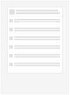
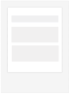
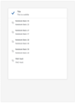
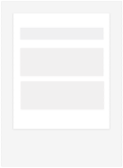
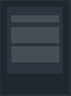
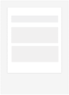
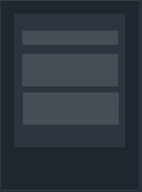

Preview Images
Configure the editor's preview
An additional section in the configuration allows to influence the preview shown in the Card editor
sap.ui.define(["sap/ui/integration/Designtime"], function (
Designtime
) {
"use strict";
return function () {
return new Designtime({
"form": {
"items": {
}
},
"preview": {
}
});
};
});
|
 |
| Property | Type | Required | Default | Description | Since |
|---|---|---|---|---|---|
| modes | string | No | "Abstract" | Possible values are "None" : No preview is shown"Abstract" : An
abstract preview
is shown with placeholders for the possible result"Live" : A small scaled
preview of
the real Card is shown."AbstractLive" : The
user will be able to toggle between abstract and live preview, starting with the abstract
preview"LiveAbstract" : The user will be able to toggle between live and abstract
preview, starting with the live preview
modes : "AbstractLive" |
1.83 |
| src | string | No | "" | Relative path to an image (png, gif, jpeg) within the card bundle. Is image will be used as
the abstract view and can replace the card internal preview. If omited the abstract preview
is created based on the Card type and settings in the card manifest. The path to the image
is relative to the baseUrl of the Card. To support
theming options on the customer side, the image should use transparency settings and gray
shades explained
here.src : "dt/preview.png" |
1.83 |
Preview of the Card in Card Editor
Preview Modes
-
None: No preview
- Abstract: (default) Only an abstract preview is available. If an own image is provided in the src
property, it will be used for the abstract preview.
  - AbstractLive: The user is able to switch from an abstract preview to a live preview and back. If an
own image is provided in the src property, it will be used for the abstract preview..

- LiveAbstract: The user is able to switch from an abstract preview to a live preview and back. If an
own image is provided in the src property, it will be used for the abstract preview..
- Live: The user is able to switch from an abstract preview to a live preview and back. If an own
image is provided in the src property, it will be used for the abstract preview..
Create a themeable preview for a Card
Preview images for Card should an abstract preview to give the user an impression of look of the final Card. As a Card developer, you should create the picture for such abstract in case you want to override the default representation that is created based on the Card type you chose. To avoid additional overhead the preview image should be created in a themable fashion. Working with gray shades and transparency this is easily possible. The image should work with these sizes and colors.
- Width: 250px
- Height: 300px
- Background: transparent
- Foreground: rgb(225,225,225) opacity 50%, rgba(225,225,225,0.5)
 



sap.ui.define(["sap/ui/integration/Designtime"], function (
Designtime
) {
"use strict";
return function () {
return new Designtime({
"form": {
"items": {
}
},
"preview": {
"src": "dt/preview.png"
}
});
};
});
Try it Out